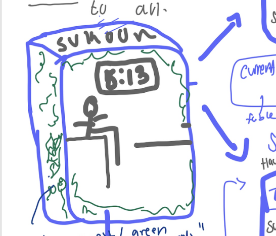
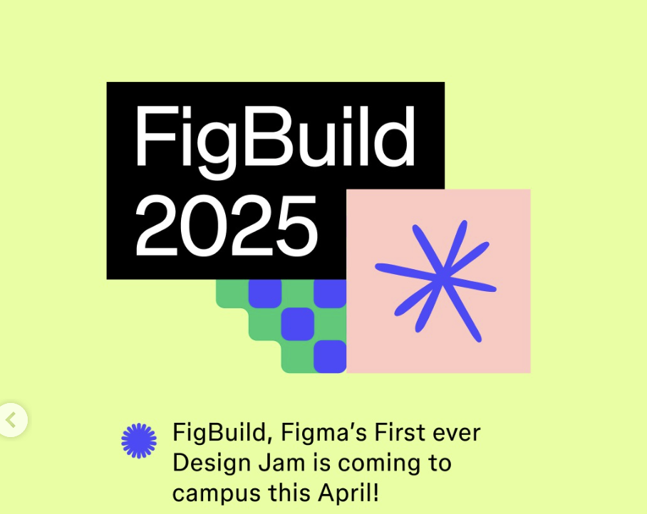

2022


2023


2024


2025
{program} 🚀
Future
first real attempt at a "how might we?"
how might we turn a bunch of scattered experiences into something that feels
alive,
playful, and
easy to explore?
i thought about audio waves, how each moment carries energy and rhythm, and designed this timeline to feel the same way.
every bar is a beat, a snapshot of something i built that slightly relates to design, with stories layered underneath.
-hawa 🥰